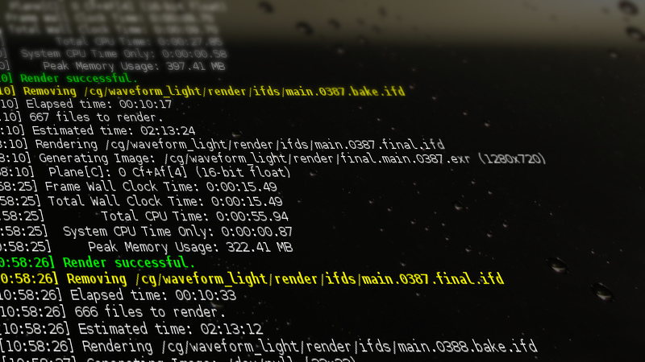

Just run this script in the directory containing IFD ’s to render them all.
To stop rendering simply Ctrl-C the process,
it will wait for the current render job to finish,
then it cleans up the IFD and exits.
If you have no time to wait,
do Ctrl-C again - this cancels the current job by killing Mantra process.
The script also prints out some useful info with Mantra-like timestamp:
the name of the file being rendered, finished render status,
elapsed and estimated time.
There are just a few optional parameters, run script with -h flag to see them:
directory where to look for IFD files
-k: disables removing of files which where rendered without errors
-m: add Mantra command-line option after this flag
The script itself:
#!/bin/bash
#: Title : Mantra batcher
#: Date : 10.08.2016
#: Modified : 12.03.2016
#: Author : Saldygashev Roman
#: Version : 0.15
#: Description : Run Mantra renderer for multiple ifd files
#: Options : see tinyfarm.bash -h
#: License : WTFPL
# primary default subpath: pwd/SUBPATH
SUBPATH=render/ifds
# keep successfully rendered file
KEEP=0
showhelp() {
echo "Usage: $0 [DIR] [-h] [-k] [-m ARGS]"
echo "Runs mantra for ifds in current directory/$SUBPATH, or in current directory, or in DIR, or in DIR/$SUBPATH"
echo "Options:"
echo -e "\t-h\tshow help and exit"
echo -e "\t-k\tkeep files - do not remove after successful render"
echo -e "\t-m ARGS\tMantra arguments. See mantra -h"
}
declare DIR=`pwd` # directory for ifds
declare -a MPARMS
for i in $(seq 1 $#); do
key=${!i}
case $key in
-k)
KEEP=1
;;
-m)
m=$((i+1))
MPARMS=${@: m}
break
;;
-h)
showhelp
exit 0
;;
*)
if [[ -d $key ]]; then
DIR=$key
else
echo "Unknown option $key"
exit 1
fi
;;
esac
done
declare -i QUIT=0 # quit handler
declare -i EXC=0 # exit code
RED='\033[31;1m'
GREEN='\033[32;1m'
YELLOW='\033[33;1m'
RESET='\033[0m'
# Mantra-like timestamp
timestamp () {
date +"[%T]"
}
justmessage () {
echo `timestamp` $@
}
warning () {
echo -e ${YELLOW}`timestamp` $@${RESET}
}
failure () {
echo -e ${RED}`timestamp` $@${RESET}
}
success () {
echo -e ${GREEN}`timestamp` $@${RESET}
}
PreTrap() {
warning "Interrupted by user" $((QUIT+1)) "times"
EXC=1
((QUIT++))
if [ $QUIT -gt 1 ]; then
warning "Canselling current render with PID" $MPID
kill $MPID
exit $EXC
fi
}
PostTrap() {
# uncomment the next line, if you want to prevent double/triple interruption
# while kill -0 $MPID >& /dev/null; do wait $MPID; echo "waiting"; done
if [ $QUIT -eq 1 ]; then
justmessage "Waiting for render to finish..."
wait $MPID
RSTATUS=$?
CleanUp
exit $EXC
else
CleanUp
fi
}
# if the exit code is zero (exit normally) then remove file
CleanUp () {
((IFDNUM--))
if [ $RSTATUS -eq 0 ]; then
success "Render successful."
if [ $KEEP -eq 0 ]; then
warning "Removing" ${ifd}
rm $ifd
fi
else
failure "Render failed."
EXC=2
fi
local elt=`get_elapsed_time`
justmessage "Elapsed time:" `convert_time $elt`
}
get_current_time () {
date -u +"%s"
}
get_elapsed_time () {
local -i ct=`get_current_time`
echo $((ct-STIME))
}
convert_time() {
date -u --date="@$1" +"%T"
}
estimate_time () {
local -i fed=$((${#ifds[@]}-IFDNUM)) # number of rendered files
local -i spf=0 # seconds per file
local -i eld=`get_elapsed_time`
if [ $eld != 0 ]; then
spf=$((eld/fed))
local -i es=$((spf*IFDNUM)) # estimated seconds
echo `convert_time $es`
else
echo "N/A"
fi
}
searchpath=${DIR}
# find the folder containing ifds
if ! ls ${DIR}/*.ifd* 1> /dev/null 2>&1; then
if [ -d ${DIR}/${SUBPATH} ]; then
if ! ls ${DIR}/${SUBPATH}/*.ifd* 1> /dev/null 2>&1; then
echo "There is nothing to render in $DIR/$SUBPATH"
showhelp
exit 1
else
searchpath=${DIR}/${SUBPATH}
fi
else
echo "There is nothing to render in $DIR"
showhelp
exit 1
fi
fi
echo "Searchpath is" ${searchpath}
ifds=(${searchpath}/*.ifd*) # create list of files
ifds=${ifds[@]/*\**/} # remove wildcard elements
declare -i IFDNUM=${#ifds[@]} # number of files
declare -ir STIME=`get_current_time` # start time
trap PreTrap SIGINT SIGTERM SIGTSTP
for ifd in ${ifds[@]}; do
if [[ -r $ifd ]]; then
justmessage $IFDNUM "files to render."
justmessage "Estimated time:" `estimate_time`
justmessage "Rendering " ${ifd}
RSTATUS=1
mantra ${MPARMS[*]} -F ${ifd} &
MPID=$! # get mantra pid
wait $MPID # wait mantra to finish in current loop
RSTATUS=$? # get mantra exit status
PostTrap
fi
done
exit $EXC